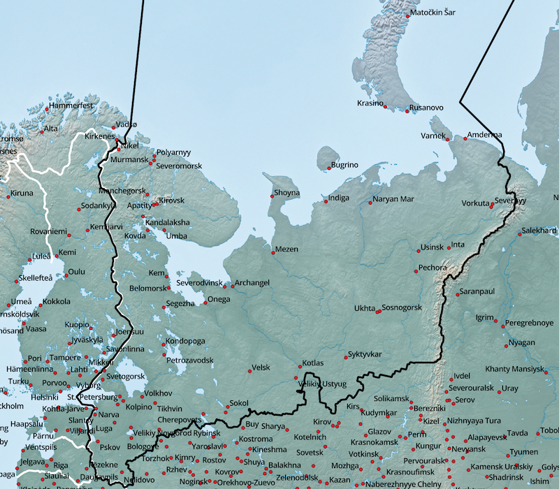
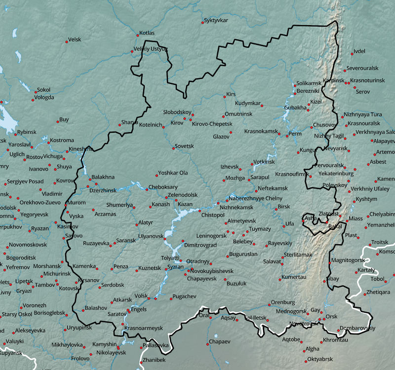
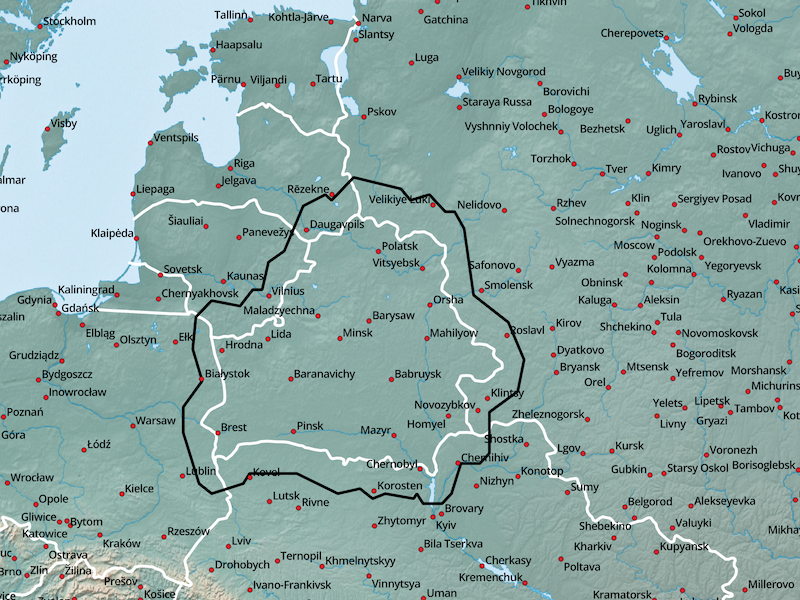
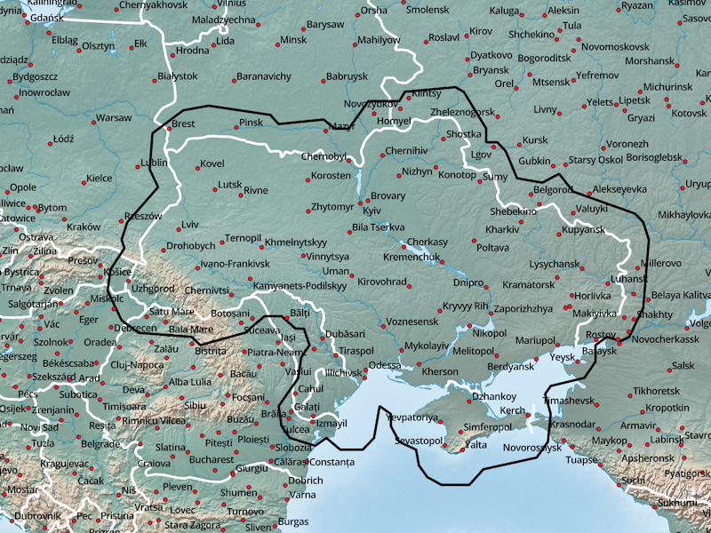

Osteuropa - verfügbare Karten:
- Russische Föderation, Föderationskreis Nordwestrussland (RUS, Northwest)
- Russische Föderation, Föderationskreis Zentralrussland (RUS, Central)
- Russische Föderation, Föderationskreis Wolga (RUS, Volga)
- Russische Föderation, Föderationskreis Südrussland (RUS, South)
- Russische Föderation, Föderationskreis Krim (völkerrechtlich umstritten, RUS, Crimea)
- Russische Föderation, Föderationskreis Nordkaukasus (RUS, Northcaucasus)
- Russische Föderation, Exklave Kaliningrad (RUS, KGD)
- Republik Belarus (BLR)
- Ukraine (UKR)
Hinweise zum Download:
- Klick auf das Netbook Icon im PC-Browser: die Karte wird auf den Personal-Computer geladen
- Klick auf das Locus Map Icon im Android-Browser: Karte+Design werden nach Locus Map geladen
- Klick auf das OruxMaps Icon im Android-Browser: die Karte wird nach OruxMaps geladen
Russische Föderation, Föderationskreis Nordwestrussland (RUS, Northwest):

| RUS_NORTHWEST |
Russische Föderation, Föderationskreis Zentralrussland (RUS, Central):

| RUS_CENTRAL |
Russische Föderation, Föderationskreis Wolga (RUS, Volga):

| RUS_VOLGA |
Russische Föderation, Föderationskreis Südrussland (RUS, South):

| RUS_SOUTH |
Russische Föderation, Föderationskreis Krim (völkerrechtlich umstritten, RUS, Crimea):

| RUS_CRIMEA |
Russische Föderation, Föderationskreis Nordkaukasus (RUS, Northcaucasus):

| RUS_NORTHCAUCASUS |
Russische Föderation, Exklave Kaliningrad (RUS, KGD):

| RUS+KGD |
Republik Belarus (BLR):

| BLR+ |
Ukraine (UKR):

| UKR+ |